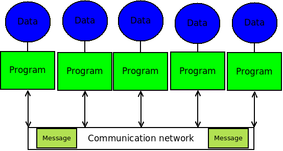
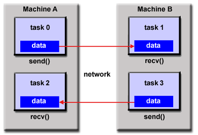

Session 1
Introduction to MPI
Introduction
- A disributed system is composed by different computing nodes
- Each computing node has its own memory to store data
- The nodes comunicates among them by messages

Introduction
- MPI stands for Message Passing Interface
- Standard Protocol to comunicate distributed processes
- Developed in 1993 based on the Message Passing Paradigm

Introduction
-
- Programing Languages: C, C++, Fortran.
- Different implementations: MPICH2, LAM/MPI, OpenMPI
- The MPI API contains different functions to comunicate and synchronize the different tasks
- Very scalable through processors
#include "mip.h"
int main(int argc, char **argv) {
/*No MPI functions called before this*/
MPI_Init(&argc,&argv);
/* MPI code here */
MPI_Finalize();
/*No MPI functions called after this*/
}
Using MPI
- Install the MPI libraries
sudo apt-get install libcr-dev mpich2 mpich2-doc
- Compile
mpicc program.c -o program
- Execute
mpirun -np <Number of processors> ./hello
MPI Functions
#include "mpi.h"
- Contains the definitions, macros and function prototypes of MPI.
int MPI_Comm_rank(MPI_Comm communicator, int* rank)
- Returns a different non-negative ID to each processor
- Communicator: collection of processes that can send messages to each other. For basic programms use MPI_COMM_WORLD.
int MPI_Comm_size(MPI_Comm communicator, int* size)
- The total number of processors in this execution
int MPI_Get_processor_name(char* host, int* namelen)
- Obtain the hostname of the processor
Hello World Example
#include "mpi.h"
#include <stdio.h>
int main(int argc, char *argv[]){
int rank, nprocs, len;
char name[MPI_MAX_PROCESSOR_NAME];
MPI_Init(&argc,&argv);
MPI_Comm_size(MPI_COMM_WORLD,&nprocs);
MPI_Comm_rank(MPI_COMM_WORLD,&rank);
MPI_Get_processor_name(name, &len);
printf("Hello, world. I am %d of %d on %s\n", rank, nprocs, name);
fflush(stdout);
MPI_Finalize();
return 0;
}
Message Envelope
- To send a message we need and envelope
- In MPI, envelopes are:
- The datatype of the message
- The size of the message (count)
- The destination/source of the message
- A tag to classify the message
Message Envelope
MPI datatypes are not the same as C types, however MPI has some predefined types corresponding to them
| MPI DataType | C DataType |
|---|---|
| MPI_CHAR | signed char |
| MPI_SHORT | signed short int |
| MPI_INT | signed int |
| MPI_LONG | signed long int |
| MPI_UNSIGNED_CHAR | unsigned char |
| MPI_UNSIGNED_SHORT | unsigned short int |
| MPI_UNSIGNED | unsigned int |
| MPI DataType | C DataType |
|---|---|
| MPI_UNSIGNED_LONG | unsigned long int |
| MPI_FLOAT | float |
| MPI_DOUBLE | double |
| MPI_LONG_DOUBLE | long double |
| MPI_BYTE | |
| MPI_PACKED |
Basic Communication Operations
int MPI_Send(void* message, int count, MPI_Datatype datatype, int dest, int tag, MPI_Comm comm)
- Sends a message to a designated process dest
int MPI_Recv(void* message, int count, MPI_Datatype datatype, int source, int tag, MPI_Comm comm, MPI_Status* status)
- Receives a message from the process source
- the parameters must match the send ones
- MPI_ANY_SOURCE allows to recieve data from any source
- MPI_ANY_TAG allows to recieve messages with any tag
MPI_Status struct
MPI_Status is an struct that contains the following fields:
- MPI_SOURCE The id of the sender. Usefull when MPI_ANY_SOURCE used
- MPI_TAG The tag of the message. Usefull when MPI_ANY_TAG used
- MPI_ERROR Any error returned for the call
Message Passing Hello World
- Each process but the 0 send a message to process 0 :
- "Hello, world. I'am <rank> of <numproc> on <name>"
- The proces 0 will print the same message for itself and for all messages recieved:
- "Recieved from <source> : <message recieved>
<That's all!>